こんにちは、Japan Developer Support Core チームです🗻
いつも Azure DevOps Services をご利用いただき、ありがとうございます。
以前、Azure Pipelines のトラブルシューティング用のデータ採取についての記事を公開しました。
皆様、お役立ていただけていますでしょうか？
Azure Pipelines のトラブルシューティング用データ採取について | Japan Developer Support Core Team Blog
さて、今回の記事では、Azure DevOps Services 全般で生じた問題におけるトラブルシューティング用のデータ採取方法についてご紹介していきます。
迅速な問題解決のためには…
どのような操作を行ったのか
どのようなエラー メッセージが表示されたのか
どのようなネットワークの通信が発生したのか
どのようなプロセスが動作していたのか
…等々、事象発生時の正確な状況を把握する必要があります。
正確な状況把握と共に、弊社サポート サービスとお客様との間で認識合わせを行うためにも必要なこれらの情報の採取手順について、以下に具体的にご説明します！
各種情報
1. ユーザー操作を記録する
2. ブラウザー トレースを採取する
3. Fiddler トレースを採取する
4. Tcpdump ログを採取する
5. Process Monitor ログを採取する
1. ユーザー操作を記録する
問題が発生するまでの一連の流れについて、画面のスクリーン ショット (PSR ログ) を採取する手順です。
Windows の場合
Windows をご利用の場合は、ステップ記録ツールを用いて一連の手順のスクリーン ショット (PSR ログ) を採取することができます。
スタート メニュー → [Windows アクセサリ] -> [ステップ記録ツール] を選択します 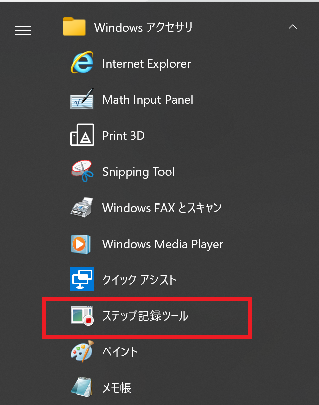
[記録の開始(A)] ボタンを選択します 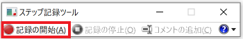
問題を再現させます
操作を終えたら、[記録の停止(O)] を選択します 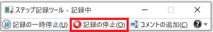
[保存(V)] を選択します 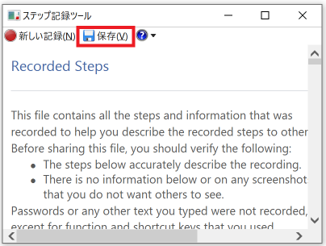
任意のファイル名で保存した ZIP 形式のファイルを、弊社へご提供ください
上記の操作はコマンド ラインからも採取できます。
どちらの方法でも構いませんので、お好みの方法で情報採取ください。コマンドプロンプトを起動し、以下の通り PSR ログの取得を開始してください
psr /start /output <出力先パス>\psr1.zip /maxsc 99 /gui 0
例: psr /start /output c:\work\psr1.zip /maxsc 99 /gui 0問題を再現させます
ステップ 1. のコマンドプロンプトから以下を実行して PSR ログの取得を終了 し、弊社までご提供ください。
psr /stop
※参考
問題を再現する手順の記録
macOS の場合
macOS をご利用の場合は、以下のサイトを参考にスクリーン ショットを採取し、弊社までご提供ください。
Mac で画面を収録する方法 - Apple サポート (日本)
2. ブラウザー トレースを採取する
ご利用のブラウザーの種類ごとに、ブラウザー トレースの採取手順は異なります。
以下のドキュメントをご参照いただき、ご利用のブラウザーの種類に応じて情報を採取して、弊社までご提供ください。
トラブルシューティングのためにブラウザー トレースをキャプチャする - Azure portal | Microsoft Docs
上記ドキュメントにも記載されておりますが、ブラウザー トレースも含めて以下の 3 つのログをご提供いただけると、お客様が実施した全ての手順を正確に把握することができますので、是非ご検討ください。
ブラウザー トレース (HAR ファイル)
ブラウザーのコンソールに出力されたログ
操作画面を記録したログ (
# 1. ユーザー操作を記録するでご紹介した PSR ログ)なお、Azure DevOps Services のポータルサイトをご利用の際に、クライアント環境においてサポートしているブラウザーの種類およびバージョンにつきましては、以下の弊社ドキュメントでご紹介しております。
Client version compatibility - Azure DevOps | Microsoft Docs
もし「ポータルサイトでの表示結果がおかしい」「ポータルサイトでのみ問題が発生する」といった事象が発生していましたら、サポートされているブラウザーおよびバージョンをご利用かどうかも念のためにご確認ください。
3. Fiddler トレースを収集する
Fiddler ツールを環境にインストールいただき、ネットワーク トレースを採取する方法です。
こちらの手順で紹介する Fiddler Classic は Windows のみ対応しております。
macOS または Linux をご利用の場合は、後述する 4. Tcpdump ログを採取する の手順をご参照ください。
Fiddler のインストールについて
以下のページから、Fiddler ツールのインストーラーをダウンロードします
Download Fiddler Web Debugging Tool for Free by Telerikプルダウン メニュー「How do you plan to use Fiddler?」から、任意の項目を選択します
例: Website development/debugging「Your email」欄に任意のメール アドレスを入力します
「I accept the Fiddler End User License Agreement」にチェックを入れます
「Download for Windows」ボタンを押下します
ダウンロードした "FiddlerSetup.exe" を実行します
インストーラーの指示に沿ってインストールを実施します
以上で Fiddler のインストールは完了です。
続いて、Fiddler を用いてネットワーク トレースを採取する方法をご紹介します。Fiddler でのトレース採取手順
スタート メニュー -> [Fiddler Classic] を選択し、Fiddler を起動します 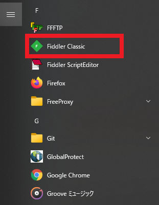
[File] -> [Capture Traffic] のチェックを外し、ログの採取を停止状態にします
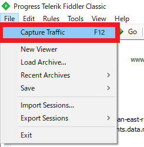左側ペインのログを一つ選択し、Ctrl + A キーを同時に押しで全選択したら、Delete キーを押下してログを削除します
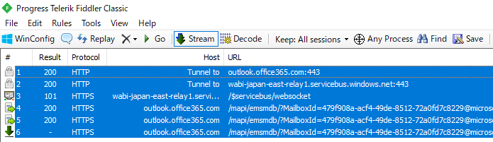 ↓
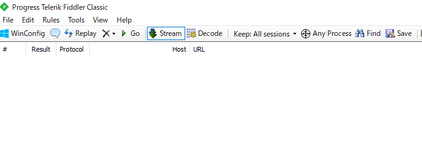[Tools] -> [Options...] を選択します
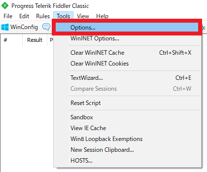[HTTPS] タブを選択 -> "Decrypt HTTPS Traffic" のチェックを入れ、その下のドロップダウン リストから "...from all processes" を選択します
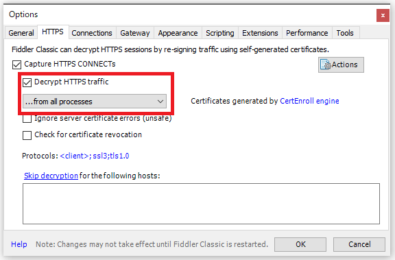初回時のみ、HTTPS 通信を復号化するために証明書のインストールを行う画面が表示されますので、[Yes] を選択します
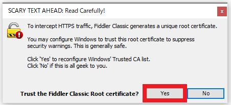[はい] を選択します
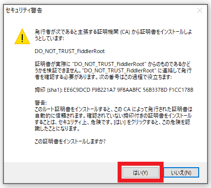[はい] を選択します
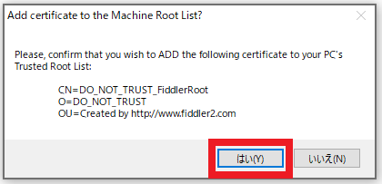証明書のインストール完了画面が表示されますので、[OK] ボタンを押下します
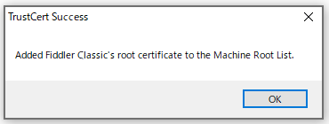[HTTP] タブ -> "
;ssl3;tls1.0" のリンクを選択します
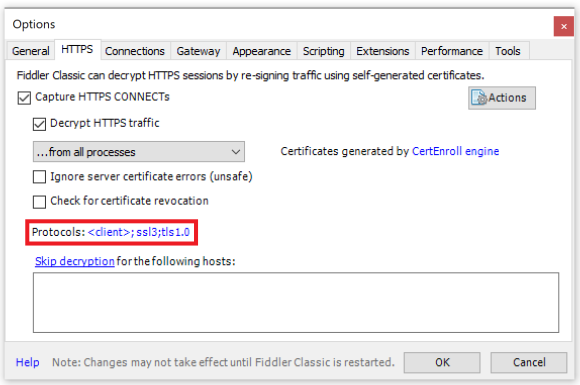下図のように "tls1.1;tls1.2" を追記 -> [OK] ボタンを押下します
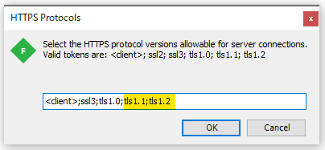設定画面を閉じます
[File] -> [Capture Traffic] のチェックを入れて、トレースを開始します
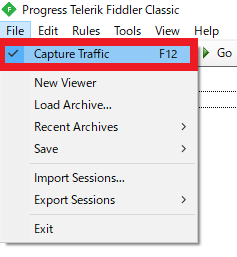問題を再現させます
[File] -> [Capture Traffic] のチェックを外し、ログの採取を停止状態にします
[File] -> [Save] -> [All Sessions...] を選択します
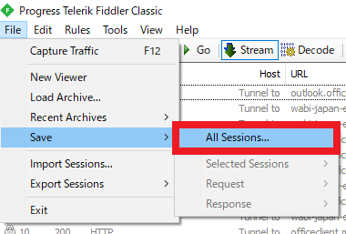ファイルの保存ダイアログが表示されますので、任意の場所に保存します
保存したファイル (拡張子 .saz) を弊社までご提供ください
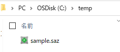手順 6-9 でインストールした証明書につきましては、[Tools] -> [Options...] -> [HTTP] タブ -> [Actions] -> [Reset All Certificates] を選択することでアンインストールが可能です。
Fiddler ツールを使用する際にのみ使用される証明書であり、インストールされていることでお客様のネットワークに影響を与えるものではございませんが、もしご心配な場合は情報採取後にアンインストールしてください。 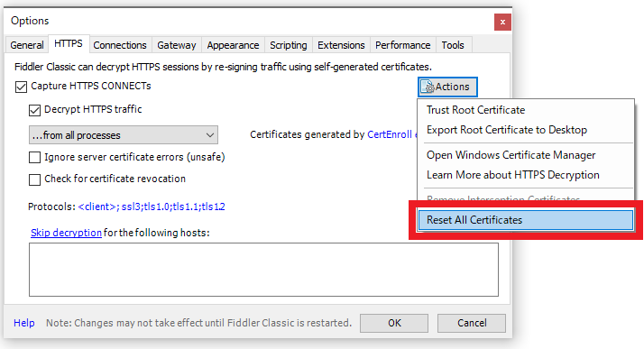
4. Tcpdump ログを採取する
tcpdump は、macOS や Linux をご利用の際に、環境に対してツールのインストールが制限されている場合等に、ネットワーク トレースを採取する方法として有効です。
以下のコマンドを実行し tcpdump がインストールされているかどうかを確認します
tcpdump -h
※ インストールされていない場合には、Red Hat Enterprise Linux や CentOS では、「yum -y install tcpdump」を実行し、Debian や Ubuntu では、「apt-get install -y tcpdump」を実行してインストールします
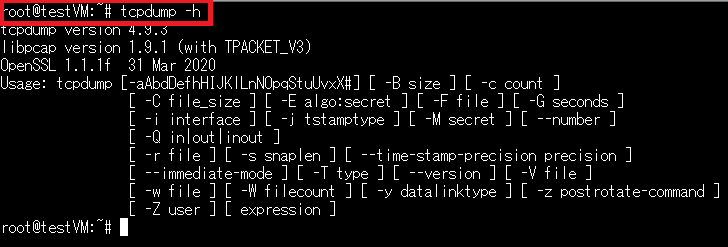以下のコマンドを実行し、ネットワークインターフェースを確認します
ifconfig
※ インストールされていない場合には、Red Hat Enterprise Linux や CentOS では「yum install net-tools」を実行し、Debian や Ubuntu では「apt-get install net-tools」を実行してインストールします
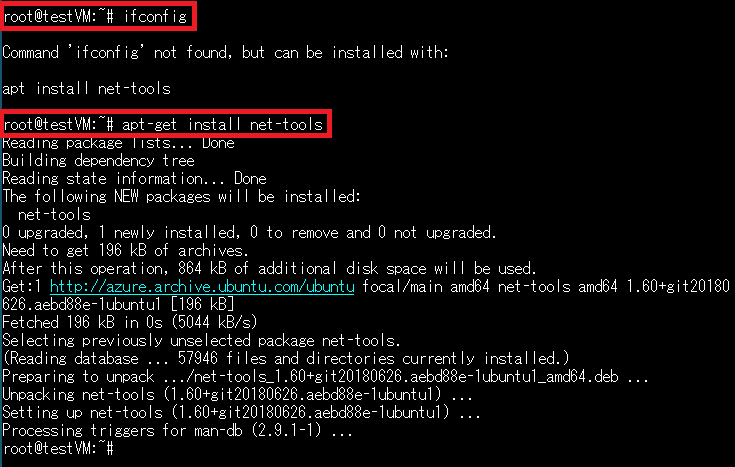
※ ifconfig がインストールされると、下図のようにインターフェースが表示されます 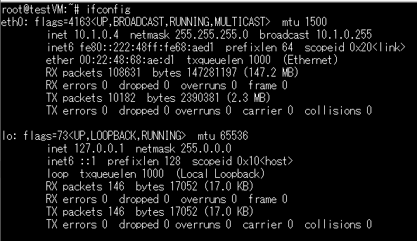パケットキャプチャを開始します
tcpdump -i <ネットワークインタフェース名> -w trace.pcap
例: tcpdump -i eth0 -w trace.pcap 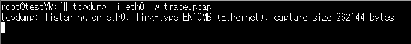
※ -w オプションで指定したファイルが、Tcpdump ログになります。
※ Permission の問題により、パケットキャプチャの開始が出来ない場合は、root ユーザーから実行する、もしくは「sudo tcpdump -i <ネットワークインターフェース名> -w trace.pcap」のようにスーパーユーザーの権限で、コマンドを実行してください。問題を再現させます
パケットキャプチャを停止します
Ctrl + C キーを同時に押して、停止してください 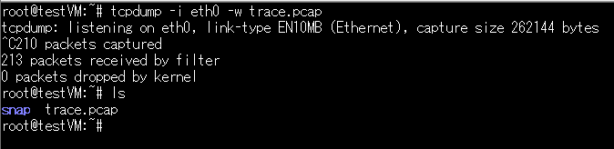Tera Term の SSH SCP または SCP コマンド等を使って、採取した Tcpdump ログのファイルをローカル環境にダウンロードし、弊社へご提供ください。
5. Process Monitor ログを採取する
Process Monitor は、システム上で動作している各プロセスの動作状況、各プロセスのリソース (ファイル、レジストリ) へのアクセス状況を監視し、情報を採取するツールです。
Self-hosted Agent をご利用の場合は、Agent マシン上のプロセスの変遷が確認できますので、特定の環境で発生している問題の解析等に有効なログとなります。
Process Monitor ログの採取手順は以下のブログをご参照ください。
Process Monitor ログの採取手順 | Japan Developer Support Core Team Blog
最後に
今回は、Azure DevOps Services でのトラブルをスムーズに解決するために、必要な情報の採取方法をご紹介しました。
今後も Azure DevOps Services のご利用にお役立ていただける情報を、どんどんご紹介していきたいと思いますので、どうぞよろしくお願いします！
本ブログの内容は弊社の公式見解として保証されるものではなく、開発・運用時の参考情報としてご活用いただくことを目的としています。もし公式な見解が必要な場合は、弊社ドキュメント (https://learn.microsoft.com や https://support.microsoft.com) をご参照いただくか、もしくは私共サポートまでお問い合わせください。